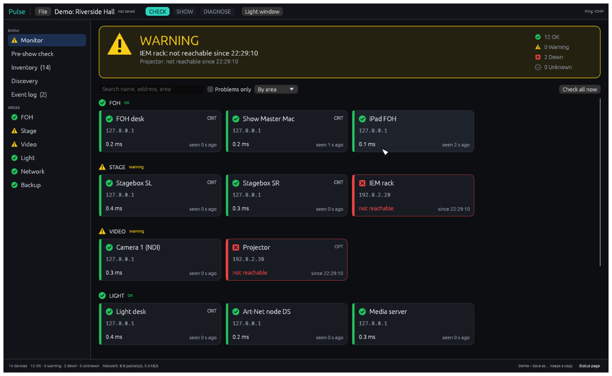
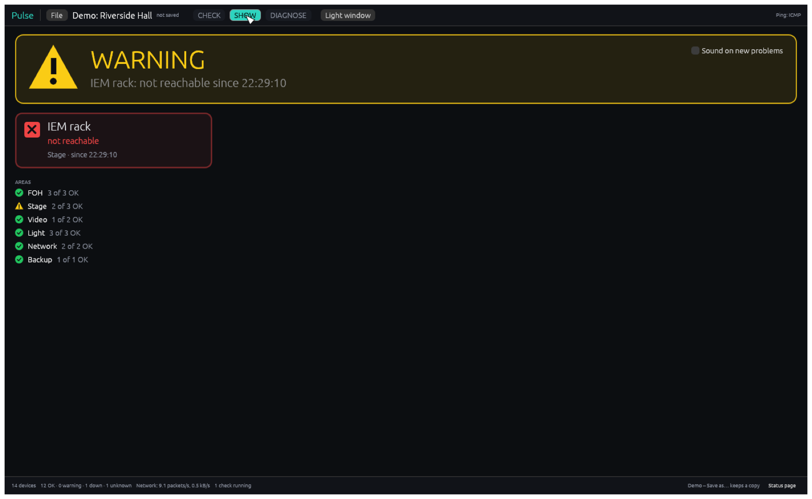

Showtime Suite
Showtime Suite
Pulse
Checks before and during the show that the desk, stageboxes, NDI sources, Art-Net and sACN universes, tablets, show computers and the network are there and healthy, and turns all of it into one traffic light with the reasons.
Pulse Agent is a small read-only helper for show computers: CPU, memory, free disk and whether the show programs run.
For macOS, Windows and Linux. Easiest with Showtime Suite, which also keeps it up to date.


What it does
One light
Green, yellow or red, with the reason in plain words, per area and overall. Calm, with hysteresis and acknowledgements.
Checks that only ask
Ping without admin rights, TCP ports, console queries, Art-Net and sACN universes, Dante and NDI, switch ports over SNMP.
19 presets
X32 / M32, X Air, Wing, Soundcraft Si, grandMA3, Dante, NDI, Art-Net, sACN, switches, show computers and more.
CHECK, SHOW, DIAGNOSE
Set up and check; a quiet view for the show with a separate light window; graphs, hints, port test and traceroute for one device.
Pre-show check
Every check once, sign-off with your name, a report as HTML and CSV.
Status page
A read-only view for phones of the crew in the same network.
From Blueprint
Take over the devices of a Blueprint project, with presets from their model.